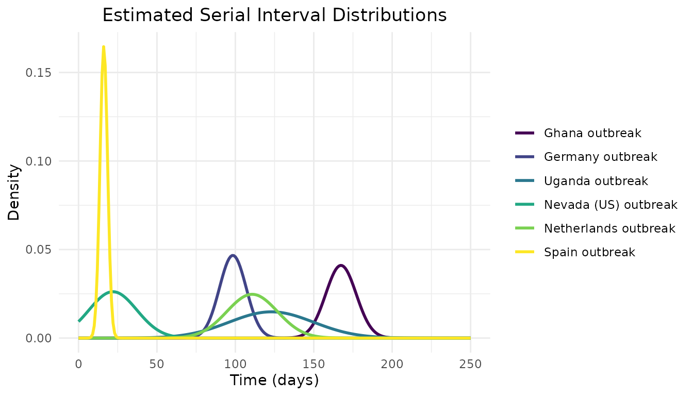

serial_interval_analysis
Source:vignettes/serial_interval_analysis.Rmd
serial_interval_analysis.RmdIntroduction
Determining serial interval of scabies using epidemic curves from different sources.
We will calculate the index case-to-case (ICC) interval for each person by class the person with the greatest value for number of days since symptom onset will be considered the index case. The rest of the class members will have an ICC interval calculated as the number of days between their symptom onset and the index case.
Data Sources
- Kaburi et al. 2019 BMC Public Health https://doi.org/10.1186/s12889-019-7085-6
- This paper describes an outbreak of scabies in a preschool in Ghana
- Ariza et al.
- this data is from a pre-school in Germany
- Akunzirwe et al 2023. https://uniph.go.ug/an-outbreak-of-scabies-in-a-fishing-community-in-hoima-district-uganda-february%E2%88%92june-2022/
- outbreak in a fishing community in Uganda in 2022. Data are provided weekly, so all infections for each week are attributed to the first day of the week
- SCABIES OUTBREAK AMONG RESIDENTS OF A LONG TERM CARE FACILITY, CLARK COUNTY, NEVADA, 2015 file:///Users/kylieainslie/Downloads/Scabies%20%E2%80%93%20Clark%20[v%202015%20i%2021%20e%201.0]_BP.pdf
- Tjon-Kon-Fat et al. (2021) Short report: The potential of PCR on
skin flakes from bed linens for diagnosis of scabies in an outbreak.
PLoS Negl Trop Dis 15(6): e0009485. https://doi.org/10.1371/journal.pntd.0009485
- cases identified by week, date of onset is attributed to first day of the week
- Larrosa A., et al. Nosocomial outbreak of scabies in a hospital in
Spain. Euro Surveill. 2003;8(10):pii=429. https://doi.org/10.2807/esm.08.10.00429-en
- Spain outbreak in a hospital
Serial Interval Analysis
Estimate serial interval distributions
Plot of the distribution of each study’s serial interval. We assume a normal distribution.
# Plot serial interval curves
# Data preparation
x <- seq(0, 250, by = 1)
y1 <- dnorm(x, mean = 167.34442, sd = 9.71763)
y2 <- dnorm(x, mean = 98.4, sd = 8.542332)
y3 <- dnorm(x, mean = 122.92385, sd = 26.92035)
y4 <- dnorm(x, mean = 21.91776, sd = 15.23666)
y5 <- dnorm(x, mean = 110.71571, sd = 16.13879)
y6 <- dnorm(x, mean = 16.106246, sd = 2.421762)
# Create a data frame
my_data <- data.frame(
x = rep(x, 6),
y = c(y1, y2, y3, y4, y5, y6),
group = factor(rep(c("Ghana outbreak", "Germany outbreak", "Uganda outbreak",
"Nevada (US) outbreak", "Netherlands outbreak", "Spain outbreak"), each = length(x)),
levels = c("Ghana outbreak", "Germany outbreak", "Uganda outbreak",
"Nevada (US) outbreak", "Netherlands outbreak", "Spain outbreak"))
)
# Create the plot
ggplot(my_data, aes(x = x, y = y, color = group)) +
geom_line(linewidth = 1) +
labs(title = "Estimated Serial Interval Distributions",
x = "Time (days)",
y = "Density") +
scale_color_viridis_d() +
theme_minimal() +
theme(
plot.title = element_text(hjust = 0.5),
legend.title = element_blank()
)
Meta-analysis
df_effect_sizes <- data.frame(
mean_si = c(167.34442, 98.4, 122.92385, 21.91776, 110.71571, 16.106246),
sd_si = c(9.71763, 8.542332, 26.92035, 15.23666, 16.13879, 2.421762),
n = c(nrow(ghana_df), nrow(germany_df), nrow(uganda_long_df), nrow(nevada_long_df),
nrow(dutch_long_df), nrow(spain_long_df)),
country = c("Ghana", "Germany", "Uganda", "Nevada (USA)", "Netherlands", "Spain")
) %>%
mutate(se_si = sd_si/sqrt(n))
# we will perform a Bayesian meta-analysis using the {brms} package
# specify priors
priors <- c(prior(normal(100,50), class = Intercept),
prior(cauchy(0,1), class = sd))
# fit a random effects model
# convert sd to se
m.brm <- brm(mean_si|se(se_si) ~ 1 + (1|country),
data = df_effect_sizes,
prior = priors,
iter = 5000,
warmup = 2000,
control = list(adapt_delta = 0.99, max_treedepth = 15))
summary(m.brm)From summary(m.brm) we can see that the pooled mean
serial interval is 95.57 (95% CI: 65.27, 124.83) and the pooled standard
deviation is 15.17. In the output, sd(Intercept) represents
the standard deviation of the random intercepts (the between-study
variability). Since the value of the standard deviation of the random
intercepts is large (58.31), this indicates that there is substantial
heterogeneity among the studies. This is not surprising when looking at
the estimated distributions of each study’s serial interval shown in
Figure X.
Create a forest plot with each study’s estimate of mean SI and the pooled estimate.
forest_data <- df_effect_sizes %>%
mutate(
lower = mean_si - 1.96 * se_si,
upper = mean_si + 1.96 * se_si,
type = "Study"
) %>%
select(country, mean_si, lower, upper, type) %>%
rename(estimate = mean_si) %>%
bind_rows(
data.frame(
country = "Pooled Estimate",
estimate = posterior_summary(m.brm, variable = "Intercept")[, "Estimate"],
lower = posterior_summary(m.brm, variable = "Intercept")[, "Q2.5"],
upper = posterior_summary(m.brm, variable = "Intercept")[, "Q97.5"],
type = "Pooled"
)
) %>%
# Ensure the pooled estimate is positioned last
mutate(country = factor(country, levels = c(setdiff(country, "Pooled Estimate"), "Pooled Estimate")))
# Create the forest plot using ggplot2
ggplot(forest_data, aes(x = estimate, y = country, xmin = lower, xmax = upper, color = type)) +
geom_point() +
geom_errorbarh(height = 0.2) +
geom_vline(xintercept = posterior_summary(m.brm, variable = "Intercept")[, "Estimate"], linetype = "dashed", color = "red") +
labs(x = "Effect Size", y = "") +
theme_minimal() +
scale_color_manual(values = c("Study" = "blue", "Pooled" = "red")) +
theme(legend.position = "none")